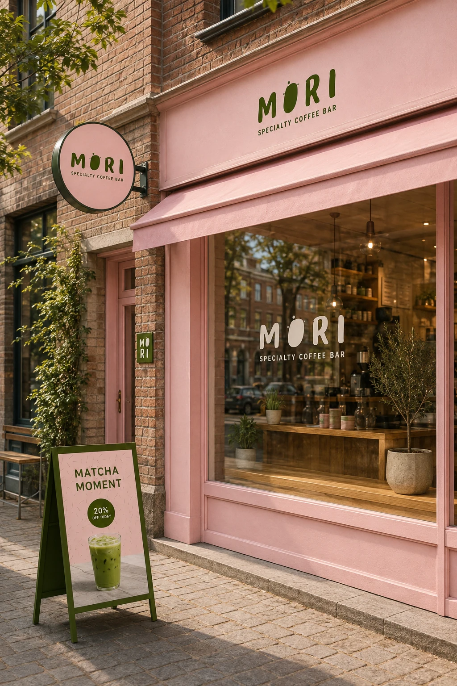

PASSION PROJECT / BRAND CONCEPT
Earthy flavours.
A softer side.
A self-initiated identity for a specialty coffee and matcha house. MORI explores a calmer kind of coffee culture through warm materials, playful details and an earthy green-and-pink palette.

THE IDEA
A little more warmth.
A little more personality.
MORI pairs a playful, organic wordmark with soft pink, olive green and natural textures. Hand-drawn marks and tactile details give the identity a friendly, relaxed character.
The concept is explored across the storefront, cups, packaging, printed materials, a menu and social content — showing how one visual idea can become a complete coffee-house experience.
- PROJECT
- MORI · Specialty coffee bar
- TYPE
- Self-initiated concept / Passion project
- DESIGN
- Nico Ristaniemi
- SCOPE
- Visual identity · Packaging · Menu · Social
MORI is a fictional brand created as a passion project. These mockups visualise the concept, rather than an operating café or a commissioned client project.